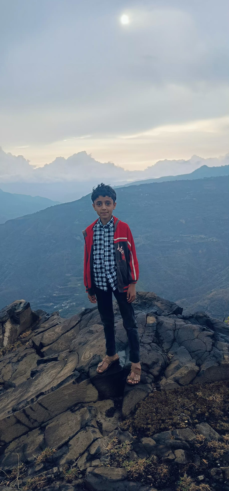

أمجد المهلل

| الاسم |
العمر |
الصف الدراسي |
مقدار الحفظ من القران الكريم |
الحلقة |
المستوى |
الترتيب على مستوى الحلقة |
التقييم على مستوى المركز |
| أمجد محمد حسن المهلل |
12 |
السابع |
جزئين ونصف |
حلقة الفاروق |
المستوى الثالث |
الرابع |
85% |
السيرة الذاتية
النشاة
-
ولد أمجد في الثامن والعشرين من شهر تشرين الثاني (نوفمبر) للعام 2012 في محافظة إب - مديرية بعدان - قرية الرباعي
نشأ أمجد وترعرع في قرية الرباعي لأسرة مكونة من .... كان المستوى المعيشي لاسرة امجد متوسطا ولكن اسرته كانت من افضل الاسر في القرية من حيث المكانة والعلم .
الهوايات والتعليم
-
بدأ امجد تعليمه الدراسي في مدرسة الشهيد الثلايا وهو في السادسة من عمره لقد كان امجد ذكيا بالفطرة كباقي اسرته
ولكن ذكاءه كان اكثر منهم ظهر ذلك واضحا وجليا في المدرسة حيث وان ترتيبه بقي الاول متقدما على جميع زملائه .
أمجد ورغم صغر سنه الا انه اطلق العنان لعقله ولم يقتصر على تعليم المدرسة بل كان يحب يحب الكثير من الاشياء
والرياضات والفنون كان يحب متابعو وممارسة كرة القدم وكان بارعا بها كان ايضا المطالعة والقراءة
والقصص والروايات مما جعله روائيا بارعا .
التحق بحلقات القران ليستمر بتعلمه وتميزه هناك ايضا .
والى الان ما زال امجد هو الفتى المتميز صغير السن كبير العطاء في المدرسة والحلقات وكرة القدم والروايات والكثير من المجالات .
التحاقه بمركز النور
-
في الثامن والعشرين من شهر تشرين الاول (أكتوبر ) للعام 2024 تم افتتاح مركز النور لتعليم القران الكريم وعلومه وتعلم القراءة والكتابة
في البداية غفل امجد عن امر حلقات القرآن ودورها الكبير في بناء الانسان الناجح بناء روحيا وعلميا امجد ظل يراود نفسه
بالالتحاق بالمركز من عدمه لمدة شهر ونصف ولكنه اتخذ قراره بعد ذلك وذهب للتسجيل .
التحق امجد بالحلقة بتاريخ 20\11\2024 وكان الطلاب هناك قد قطعوا شوطا ، وتم اختبارهم اختبارا شهريا ، لكن امجد
كعادته منذ ان التحق بالحلقة ابدى اهتماما جادا بالدروس والحفظ وغيره مما جعله يستطيع اللحاق بالنخبة المتميزة
في الحلقة والتقدم على الكثير من زملائه .
أمجد وبالرغم من انه التحق بالحلقة قبل الاختبار الشهري الثاني بمدة قليلة جدا لا تزيد عن عشرة أيام
الا انه استطاع الالمام بالدروس السابقة ومذاكرتها جيدا ليجتاز الاختبار ويحصل على الترتيب الثالث بنسبة 85% .
استمر امجد بمشاركاته الفاعلة في الدروس وتقدم على اغلبية الطلاب في الحفظ ايضا وكان له دور بارز في الانشطة الرياضية والترفيهية
ايضا حيث يعد أمجد الان من ركائز الحلقة الاساسيين والذي لا غنى عنه أبدا !.
اكتشاف موهبة التأليف والروايات
-
في إحدى الانشطة الترفيهية كانت حلقة الفاروق في رحلة إلى جبل عوف وكان امجد حاضرا في الرحلة
وفي وقت كان امجد يتبادل الحديث مع القائم بالرحلة وامور حلقة الفاروق (عمر النجار ) .
أخبر امجد عمر بأن لديه قصص وروايات من تاليفه أعجب عمر كثيرا بان يكون لديه طالب بهذا الذكاء والعقل
طلب منه عمر ان يعد مشهدا لتمثيله في تلك الرحلة قام امجد بالمهمة على اكمل وجه لكن لسوء الحظ لم يكن
الوقت كافيا لتمثيل المشهد .
قام امجد بارسال رواية خاصة به اسمها (السيف الناري ) ارسلها لعمر الذي قرائها فنالت اعجابه وطالب امجد
بكتابة المزيد من هذه الروايات والاستمرار بالمطالعة والتطور ووعده عمر انه سيكون بجانبه حتى يكون من
اشهر كتَاب اليمن والعالم .
الانجازات
انجازات التعليم
-
حصوله على الترتيب الاول في الصفوف الابتدائية اخرها الصف السادس
-
حصوله على الترتيب الثالث في مركز النور
-
الكثير من شهائد التقدير على انشطة تعليمية مختلفة في عدة اماكن
الانجازات الرياضية
-
حصوله على المركز الثالث في دوري مركز النور في النسخة الاولى
-
الكثير من شهائد التقدير على انشطة رياضية مختلفة في عدة اماكن
مؤلفاته
الروايات
-
رواية السيف الناري
بسم الله الرحمان الرحيم
انا امجد محمد حسن الذي ان شاء الله آآلف قصص اطفال كانت فلم كرتون او انمي ولان سوف أروي لكم اصدقاءي قصه من خيال امجد بسم الله
بداءت القصه حين كان احمد الذي هو بطل القصه في المدرسه وأخذ لهم الاستاذ قصة القبطان حمدان
وعند خروجهم من المدرسه قرر احمد ان يذهب الى القبطان حمدان ثم رجع الى البيت وحكى لأمه القصه فقال لإمه هيا نذهب الى القبطان حمدان فقالت الأم واين هو قال انه قريب من قريتنا قالت اذا الى الغدوان شاء الله نذهب في الغد
وفي اليوم التالي ذهبا الى هناك ورحبوا بهم جيدا ثم قرر حمدان ان يريهم كهف وقال انهم سيحبونه جدا وكذالك حدث احبوه ولاكن حدث امر لم يكن في الحسبان حيث ان باب الكهف انهدم وقالو ما هذا ثم لم يستطيعو الخروج حاولوا مرارا وتكرارا ولاكن لم يحالفهم الحض وقال احمد علينا ان نخرج من هنا في الحال وكان هناك فتح صغير كانوا يتنفسون منه
ثم قال احمد لنحفر اخدود نخرج منه فاذا دمنا على هاذه الحال لن نستطيع ان نعيش الى ثلاث دقاءق فقط اذا كان حضنا جيد احضر حمدان حفارة الطوارى ثم حفر اخدود وخرجوا منه قال حمدان الاحمد شكرا لك فلولاك لما استطعت الخروج
وفي نفس الوقت في مكان بعيد كان هناك رجل اسمه خالد كان يهدد رجل على فراش الموت ويقول له قلت انك ستعطي احمد السيف الناري اعطه الان ان كنت تقدر
ولان انتهت حلقتنا لهذا اليوم نلقاكم في حلقه آخرى ان شاء الله الى اللقاء
بسم الله الرحمان الرحيم
قد حكيت لكم في المره الاولى عن صاحب السيف الناري الجزء الاول والان سأكمل لكم القصه
بعد ان كان رجل يهدد رجل آخر تذكرا عندما كانا صغارآ وليس جدا لنحسب بعمر العشرين ، اتى لهم رجل غريب وأعطى الرجل الذي كان على فراش الموت سيفا يشع باللون الازرق خافا وكانا صديقان يحبا بعظهم جدا ثم هربا ولاكن الرجل الغريب امسك بهم وقال للذي كان على الفراش انت من ستحمل السيف ثم قال احمله ولتكن هذه أمانه وشرف وأنقذ به المضلومين وأقتل به الظالمين وانا اعتمد عليك قبل ولاكن صديقه لم يقبل بذالك فقال وما أختلف عنه كي يعطيه السيف هو لن اقبل بذالك ابدا ومنذ ذلك الوقت بدأ الفراق بينهم ثم ذهب كل منهم الى مدينه ليؤسس جيشاكبيرا ويتحدا الاخر بجيشه الذي سيؤسسه وبعد أن اسس كل منهم جيشه بدأت المعركه الكبرى وأستطاع صاحب السيف الناريالتغلب على صديقه فكان هذا سبب آخر لحقد خالد على صديقه ثم اراد أن يقتله ولاكن صاحب السيف كان قويا جدا فلم يستطع ان يهزمه فقرر أن ينتظر حتى يكبر صاحب السيف الذي كان اكبر من خالد ولا يستطيع الحراك فيقتله بهدوء جدا ولاكن مالم يكن يتوقعه ان صاحب السيف علم بخطته واراد ان يعطي السيف لاحد غيره يستطيع حاوعد واقوى منه ايظا وعلم انه كان يريد احمد بدله والذي لم يستطع تحمله خالد ابدا فاراد ان يقتله هو واحمد كي لايستطيع احد ان يحمل السيف وهاكذا علمنا كيف انهدم الباب لانه خالد هو الذي اهدمه كي يموت احمد الذي يكرهه كثيرا اما الان فنعود الى الحاظر الذي فيه خالد يريد ان يقتل صديقه الذي هو صاحب السيف الناري ولاكن احمد وصل في القطه الحاسمه وكان هو وحمدان وجنوده ولم يدع خالد يقتل صاحب السيف وامسكو به وقال لهم كيف علمتم بي قال حمدان انالاادعك تحبسني دون اي رد وقال احمد لقد راينا جنودك ثم تبعناهم الى هنا واعطى صاحب السيف السيف الى احمد واخذه احمد وقال ماهاذا فحكى له القصه كامله وعرف احمد كل شيء ثم امسك احمد السيف وقال هذا شرف لي اوعدك يا معلمي اني سوف احمل السيف بكل قوتي واقتل كل اعداءي به لن اخذلك ابدا
وهكذا تنتهي حلقتنا لهذا اليوم نلتقي في يوم آخر
وحلقه آخرى مع بدايه آخرى الى اللقاء
بسم الله الرحمن الرحيم
الان سنكمل قصة صاحب السيف الناري
بعد ان اخذ احمد السيف الناري قالت له امه انا لست مطمئنه لانك صاحب السيف الناري قال ولماذا قالت ان السيف الناري ليس لعبه تلعبها وانما هو امانه لديك لذا لاتخبر احد بذالك قال حاضر ياامي لن اخبر احد بذالك ابدا قالت سأرا قال حسنا اما الان سأذهب للمدرسه الى القاء ثم ذهب الى المدرسه وفي مكان آخر استطاع خالد ان يهرب من السجن بمساعدة صديق له وقال لصديقه اجمع اتباعي الذين هربوا ثم ذهب وحين رجع واحضر معه اتباع قال لخالد ماذا ستفعل قال لدي خطه محكمه جدا لن يستطيع احمد ان يكشفها قال وما هي قال احظر ذءابا وانقلهم الى المدرسه الذي يدرس فيها احمد وجعلها تهجم على المدرسه لنرا ماذا سيفعل احمد هذه المره وقال ان استطاعو التصدي لها قال حسبت حسابا لهاذا اتحسبني جاهل لا اعرف شيءا اما انت فستعرف بخطتي قريبا جدا انتظر فقط وعندما كان احمد يدرس هاجمته الذءاب الشرسه فقال لهم المعلم لاتخافو نحن سنتدبر الامر هذه المره ثم احضروا حجاره وعصى وحاولو ان يبعدو الذءاب ولم يستطيعوا فقام احمد وقال هذه مهمه لصاحب السيف الناري لاسواه ثم خرج واندهش الكل منه فقاتل الذءاب بكل جراءه ثم اخرج انهسيف الناري وهو يشع واندهش الطلاب والمعلمون منه لانهم راوه وهو يحمل السيف الناري وبكل جراءه وحارب به الا عداء ثم حظر خالد وقتل كل الذئاب واندهش منه المعلمون اكثر ثم قال احمد كنت على وشك ان اقتلهم شكرا لك ولاكن المعلمون شكروا خالد ثم ركز احمد قليلا فعلم انه خالد اكبر عدو له فقال لهم ان هاذا هو عدوي فلا تتقربو منه كثيرا هيا ابتعدو فلم يقبلو وقالوا انه اليوم اثبت جدارته وانه فرد منا وانه يريد السلام لاغير ثم قالو اما انت فتريد الحرب لاغير وقالو انت مطرود من المدرسه الى الابد قال ماذا انا اريد مصلحتكم لا غير حسنا اذا رجعت الى هنا فلن اكون صاحب السيف الناري بعد ذالك ابدا
بسم الله الرحمن الرحيم
الان يا اصدقائي ساكمل لكم قصة صاحب السيف الناري الجزء الرابع
بعد ان خرج احمد من المدرسه ذهب الى معلمه وهو صاحب السيف الناري السابق والذي كان قد علمه بعظ من فنون القتال وقال له آسف لقد خذلتك يامعلمي لن اعيدها ابداقال لقد ارتكبت خطأ كبير لن اسامحك على هاذاابدا قال لن اعيدها قال المعلم وما ينفع الندم الان لقد خسرت مدرستك ومعلميك وكذالك انا قال لماذا قال المعلم لقد ذهبت الى الطبيب وقال اني لم يتبقى لي حتى اموت الى بظع ايام قال احمد لا تقل هاذا قال المعلم والشئ الاسوء انني ساموت ولم اعلم انك ستستطيع حمل السيف الناري او لا ويتألم ثم يقوم احمد ويصيح بكل صوته قائلا لن اغفر لك يا خالد هاذا سوف احاسبك على ما فعلته بي سوف ارد لك الصاع صاعين وقال له معلمه ان تفشل في هاذه المره سوف آعطي السيف الناري لمن يستحق اخذه احسن منك فزع احمد كثيرا وقال حسنا سوف ابذل جهدي هذه المره ولاكن مالم يكن يتوقعه ان خالد لم يكتفي بطرد احمد من المدرسه بل وقد كان يحيك لاحمد اكثر واخبث واجبن من قبلها فقد قال لتابعه بالخطه وهي ان يقتل ام احمد وكل عائلته ولاكن لايبين للاخرين لكي لايقتلبو عليه فعند اذ لن يستطيع مقاوتهم جميعا لذا كانت لديه هذه الخطه وهي لكي يحبوه الشعب فعند اذ لن يستطيع احد ان يقتله فذهب الى بيت احمد والذي لم يكن فيه احمد الذي كان في مكان مبيت معلمه ثم راى ام احمد واطلق الرصاصه عليها ثم انبطحة ارظا وعندما عاد احمد الى البيت راى الصدمه الكبرى حيث راى امه وهي تعاني فحملها الى المستشفا واتصلوا اليه من كل مكان ليعلموه ان كل عائلته قد ماتت فقال لهم الم تستطيعو انقاذهم فقالو لا انهم الان في القبر قال لماذا لم تنقذوا امي قالو قلنا انها معك وفي حمايتك الان قال ومن فعل هاذا ثم قال انه هو ثم صاح بكل صوته قائلا انه خالد لاغيره قالو لا تتهم الناس دون اي دليل قال اصمتوا انتم لم تستطيعوا انقاذ عائلتي فكيف تتكلموا ثم ذهب الى خالد وهو يشع غضبا منه ثم قال له الم تكتف ولطمه وقال له هذه ليست الى البدايه ثم لكمه ولاكن خالد امسك بيده وقال له اعرف مع من تتكلم ياهاذا قال له انا اتكلم مع قاتل لايستطيع حماية نفسه فضحك خالد وقال تحدث عن نفسك وتقاتلا ونعرف بالتاكيد الفائز انه هو احمد صاحب السيف الناري ولا كن خالد احضر معه جنوده واستطاعو ان يهزمو احمد ولاكن احمد تعصب وفجر بهم جميعا ولاكن حظروا اكثر واستطاعو ان يتغلبو على احمد مره اخرى ولاكن حظر ولد غريب وبنت وكان لديهم اسلحه متطوره جدا واستطاعو الهروب هم واحمد الى مكان غريب ثم قال احمد لهم من انتم واين انا ولماذا انقذتموني هيا تكلموا ثم اغمى عليه وعندما استيقض راى بيتا جميلا ورآهم امامه ثم قالو اهدى لاداعي للغظب سوف نحكي لك كل شى قالوا نحن عيال الرجل الذي اعطى معلمك السيف الناري قال ولماذا انقذتموني قالوا لانك صاحب السيف الناري قال وماذا اذا قالوا اذا كنت صاحب السيف الناري فهاذا يعني انك تدافع عن الحق وهاذا يهمنا فنحن ايظا نريد الدفاع عن الحق مثلك يااحمد قال شكرا لكم لولاكم لمستطعت الهروب من هناك قالوا عفوا اما الان علينا ان نوقف خالد عند حده لذا نريد مساعدتك ايظا نحن الان في غابه بعيده جدا لن يرونا هنا قال احمد وهاذا مالا اريده ان يحدث لان لدي خطه محكمه قالوا وما هي قال سوف نستدرجه الى فخ محكم قال احفروا اخدود كبير جدا وانا ساستدرجه الى الفخ والان جهزوا كل شى سوف نبدأ بالتحرك هيا
الى هنا تنتهي حلقتنا لهاذا اليوم الى اللققققققااااااء
بسم الله الرحمىن الرحيم
الان سنكمل لكم قصة صاحب السيف الناري الجزء الخامس بسم الله
بعد ان تسجل احمد في المدرسه وفي مكان بعيد ذهب رجل الى الشرطه وكان رئيس الشرطه في مكان بعيد فتنكر كانه رئيس الشرطه وقال للشرطه ان يفكو قيد خالد واخرجوه من السجن وقالو لماذا فقال لان احمد عفا عنه وقال انه قد
علم من قتل امه وعائلته وقال ان احمد قد قال له ان يدع جميع الشرطه لكي يقبظو على القاتل ففكو قيد خالد وذهبو جميعا الى احمد قال لهم انا لم اقل شئا على الاطلاق ابدا فعرف حينها انه قد هرب ثم ذهب الى مركز الشرطه وعلم من كيمرات المراقبه انه قد قال لخالد انهم سيذهبون الى مكان بعيد جدا جدا ولن يستطيعو اللحاق بهم وعلم البلد الذي سيذهبون اليه فلحقو بهم ولاكن لم يستطيعو الامساك بهم فاعلمو رايس الشرطه الحقيقي وقال لهم اعطو احمد الذي كان على وشك السفر الى البلد الذي ذهب اليه خالد عشرين من جنودنا المخلصين والاقويا واشجعهم واناسوف اذهب معه قال احمد وساحظر معي اصدقائي محمد وفاطمه الى البلد الذي سافر اليه خالد واقبظ عليه ان شاء الله انا واصدقائي قالو هيا بنا فاتى محمد وقال قبل ان نسافر علينا ان نتدرب جيدا لقد سمعت كل شى قال احمد ولماذا قال محمد لكي لانعود خائبين لان خالد هذه المره لن يتساهل معانا البته كي لايهزم مره ثالثه قال احمد ومن سيدربنا قال انا وفاطمه قال كيف وتاتي فاطمه وتقول لاننا نحن نعلم جميع اسرار السيف الناري ونحن سندربك واما الجنود البقيه فسوف يدربهم سيدهم وقالا هيا بنا للتدريب فاقتنع احمد والبقيه
فدربوه جيدا وتدرب الجنود جيدل ايظا وقالو الان سوف نذهب وذهبو الى المدينه التي سافر اليها خالد
والى هنا نختتم حلقتنل لهاذا اليوم الى اللقاء
-
رواية السهام الثلاثة